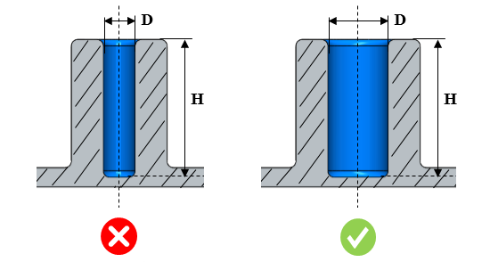
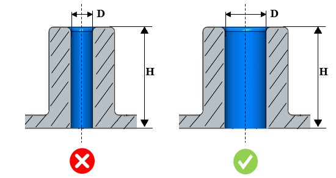

穴の深さと直径の比率は、指定された値未満でなければなりません。
ピンの長さに応じて断面形状を調整するなど、穴の深さと直径の比率を考慮して設計してください。これにより、ピンが溶融樹脂の圧力に耐えられるようになります。
穴の深さと直径の比率は、止まり穴の場合は 2 未満、貫通穴の場合は 4 未満とする必要があります。
DFMPro はフィーチャーから穴径（D）および穴深さ（H）を識別し、穴深さと直径の比率を算出したうえで、構成された値と照合して検証を行います。
ユーザーは、デフォルトで設定されている比率を編集できます。
ルール UI では、Map Material から材料の一覧が読み込まれ、ユーザーは材料およびその値を設定できます。
材料とその値を設定した後、Ctrl+M コマンドを使用することで、ルール UI 上で材料グループおよびグレード付きの設定済み材料の一覧をフィルタリングして表示できます。同じキー（Ctrl+M）を使用してフィルターをリセットすることもできます。
止まり穴：

貫通穴：

ここでは、
D = 穴径
H = 穴深さ